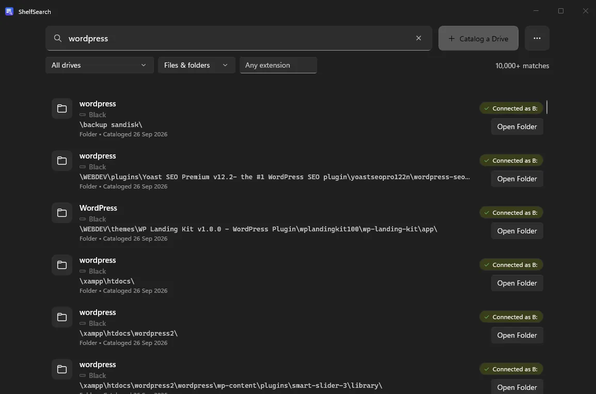
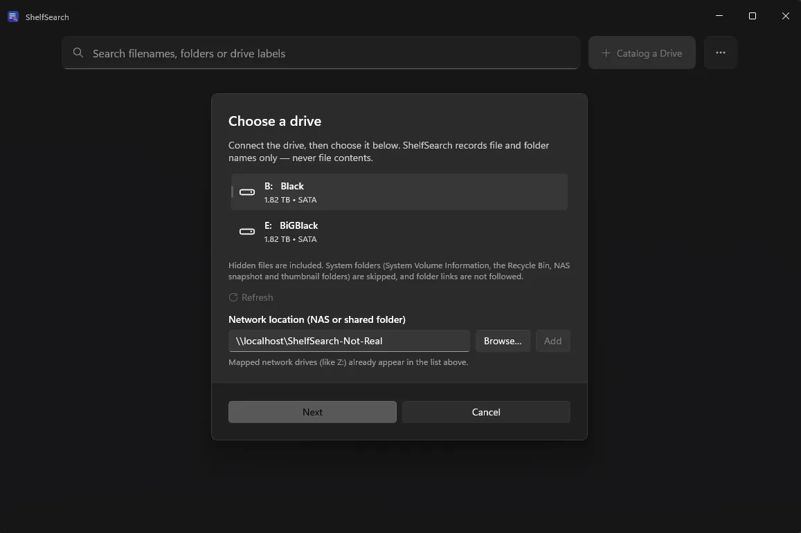
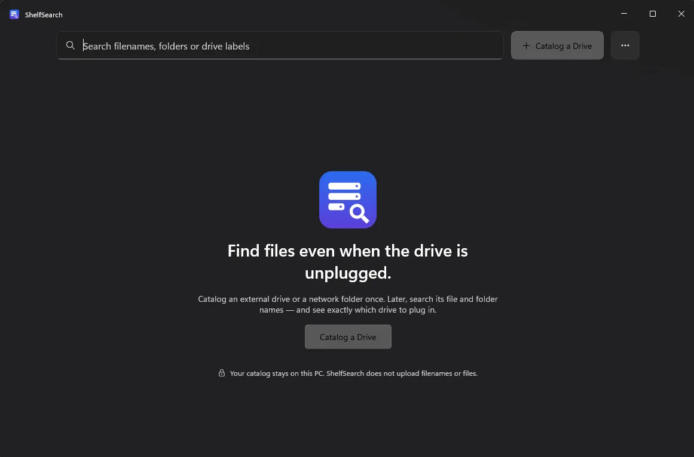
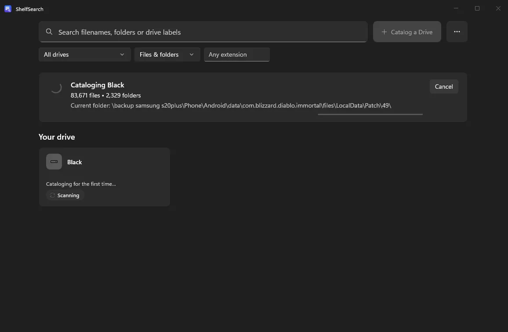

App para Windows · No ar
ShelfSearch
O ShelfSearch cria um índice local dos nomes de arquivos e dos caminhos de pastas de cada disco que você registra. Quando um disco está desconectado, você continua vendo onde está cada arquivo, para saber qual disco reconectar.
Para quem é: Para quem tem arquivos espalhados por vários discos e precisa encontrá-los rápido.
O que faz
- Registra discos externos e removíveis, unidades mapeadas e compartilhamentos de rede escolhidos
- Pesquisa enquanto um disco está desconectado e mostra onde ele está
- Mostra o status de conexão, a capacidade e o espaço livre de cada disco
- Exporta os resultados da pesquisa para CSV
- Guarda o índice no seu próprio PC
O que não faz
- Ler o conteúdo dos arquivos ou gerar miniaturas
- Enviar arquivos, usar sincronização na nuvem ou exigir uma conta online
Capturas de tela



